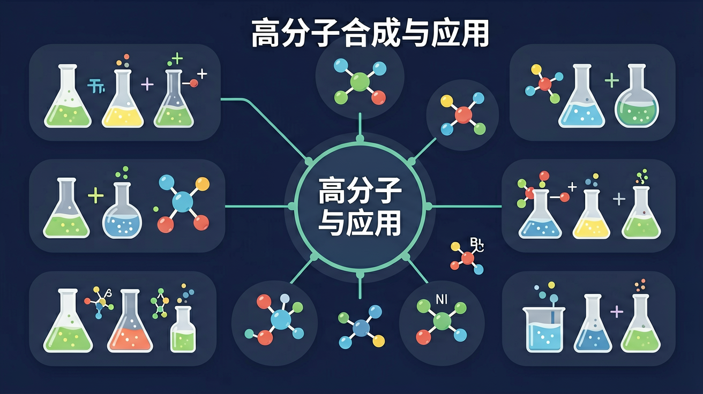

Gallery
v1.1.0 · skill v7.14.0
某运动品牌研发新型鞋底材料时，测试了三种高分子聚合物的弹性模量、耐磨性和密度。工程师发现由丁二烯单体合成的聚合物综合性能最佳，但需要调整交联度来平衡弹性和耐用性。
学生知道聚乙烯、聚氯乙烯等常见塑料的性能差异
混淆聚合反应类型对材料性能的影响机制
分析单体结构与材料性能的关系
高分子由许多重复单元（链节）通过聚合连接而成，相对分子质量很大。单体是构成高分子的小分子。聚合度表示链节重复次数。聚乙烯、聚氯乙烯、淀粉、蛋白质都是高分子。分析高分子先找单体与链节结构。
构成高分子的小分子叫？
为什么不同单体和聚合方式会得到性能完全不同的高分子材料？
先选一个你关心的问题。后面的例子、提示和 AI 学伴都会围绕这个问题来帮你推进。
选择或输入后，本课会围绕你的问题展开。
理解高分子化合物的合成原理与分类方法，掌握加聚反应和缩聚反应的特征差异，探究高分子材料性能与结构的关系
尼龙-66的缩聚反应：己二胺与己二酸在280℃反应，每形成1个酰胺键释放1分子水，最终生成具有优异机械性能的纤维材料
分析高分子结构分三步：①确定单体类型 ②判断聚合方式（双键断裂为加聚，官能团缩合为缩聚） ③画出至少三个重复单元
易混淆加聚与缩聚副产物：加聚无小分子生成（如聚乙烯），缩聚必产生小分子（如PET塑料生成水）
课堂任务：请用“现象/文本/地图/实验数据 → 关键证据 → 学科解释 → 迁移应用”四步，重写一个关于「高分子合成与应用：从单体到材料性能」的新问题。
如果你能解释“为什么不同单体和聚合方式会得到性能完全不同的高分子材料？”，这节课就真正过关了。
加聚反应由含不饱和键的单体加成连接，无小分子生成（如乙烯→聚乙烯）。缩聚反应单体间脱去小分子（如水）连接成高分子并生成副产物（如聚酯、聚酰胺）。判断类型看是否生成小分子副产物。
缩聚反应的特征是？
塑料、橡胶、纤维是三大合成材料。结构（链的支化、交联）影响性能，如交联使橡胶弹性、硬度改变。了解材料的合成单体与结构—性能关系，有助于理解应用与回收。天然高分子（淀粉、纤维素、蛋白质）也很重要。
下列属于天然高分子的是？
高分子由单体聚合而成，分加聚与缩聚。加聚单体一般含不饱和键；缩聚常伴随小分子（H₂O、HCl）生成，如聚酯、酚醛树脂。高分子性能与链结构、相对分子质量、交联等有关，应用遍及塑料、纤维、橡胶。
加聚物：看链节主链，恢复双键得单体。缩聚物：找酯基、肽键等，水解或断开得单体，并补上脱去的小分子。
常见误区：常见误区是把加聚与缩聚混淆，或写单体时漏掉缩聚脱去的小分子。
乙烯生成聚乙烯的反应类型是？
本课任务：用分子模型理解单体不饱和键打开连接成链，整理加聚与缩聚的判据、单体与链节对照表。
写清自变量、因变量和至少两个保持不变的条件，避免同时改变多个因素后无法归因。
至少记录三组带单位的数据或三个可复查的现象，不用“变大了”“更明显”代替证据。
用本课公式、粒子模型或受力关系解释趋势，并指出结论成立所依赖的模型条件。
换一个参数或真实情境预测结果，再用仿真检验；若不一致，回查变量、单位和边界条件。

识别并写出本节核心定义、公式或分类标准。
把本课标准用于一个实验数据或真实生活场景。
设计一个反例，说明常见错误为什么站不住脚。
记忆锚点：高分子四步看：单体结构、聚合方式、链结构、材料性能。
易错提醒：常见错误：把加聚和缩聚混同。加聚多打开不饱和键，缩聚常有小分子副产物。
不要只看结论。动手改变变量后，再用一句话解释画面为什么变了。